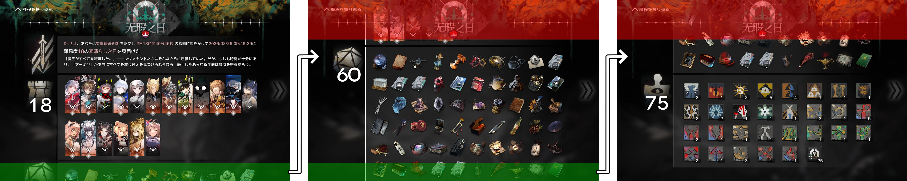
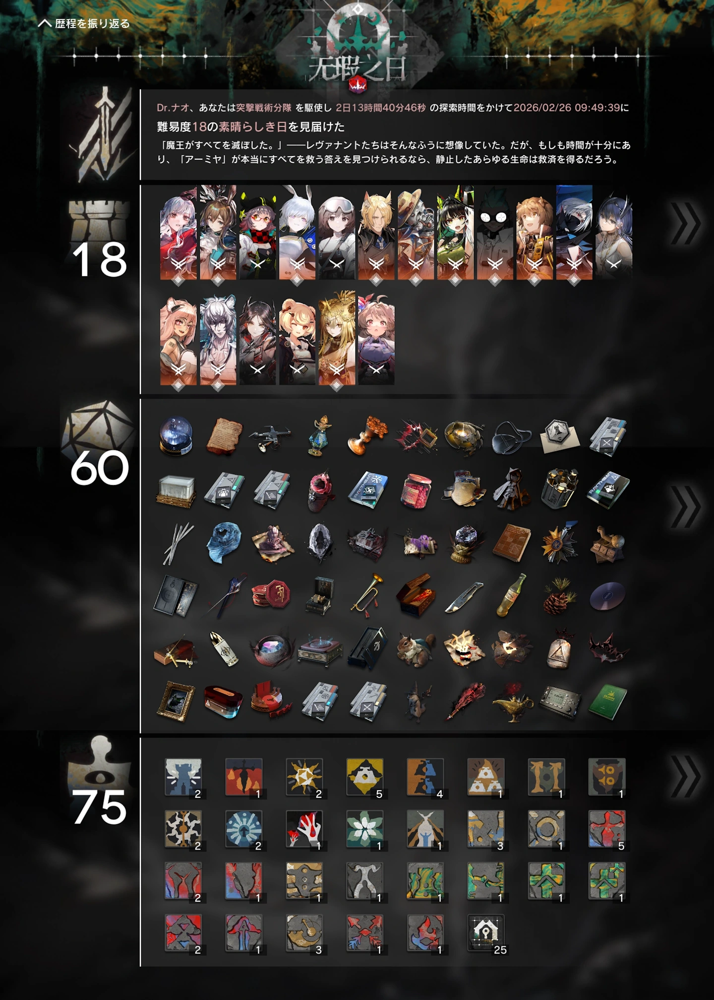

使い方
-
前の画像の最下部と次の画像の一部が少し重なるように、リザルトを複数枚スクリーンショット撮影する。
ファイル名を揃えるために上から順の撮影を推奨する。

-
必要に応じてファイル名を変更する。
例えば1.png, 2.png, 3.png, …のように、昇順で並べたときにリザルトの上から順になるようにする。
リネーム不要例:
- IMG_XXXX.PNG
- Screenshot_yyyyMMdd-hhmmss.png
-
[ファイル選択]を押して画像を全て選択する。処理が完了すると結合された画像が表示される。

処理はブラウザ上で行われ、処理前後の画像がアップロードされることはない。
入力する画像の横幅が異なる場合は、先頭画像の横幅を基準にリサイズする。
不具合報告や質問・要望は作者まで。